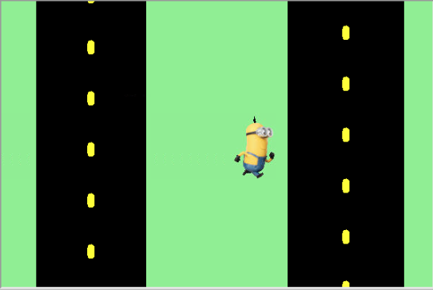

Home
Portfolio
About Me
This is my Portfolio Page!
1.1.9 Pltw Project
 
For our project we decided to make a crossy road type game with a minion and we decided to ask the player if you wish minion good luck and if you say yes he will happly go accross the road without getting hit by the car, but if you say no he turns sad then gets hit by the car and the game is over. We also had an extra option where if you say banana the minion will pick up a banana and wont go on the road.